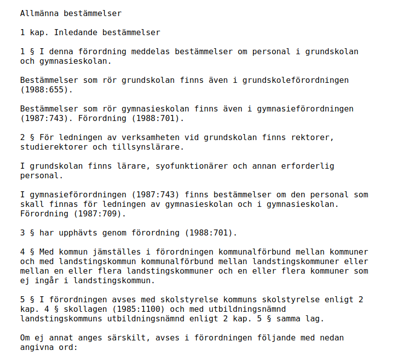
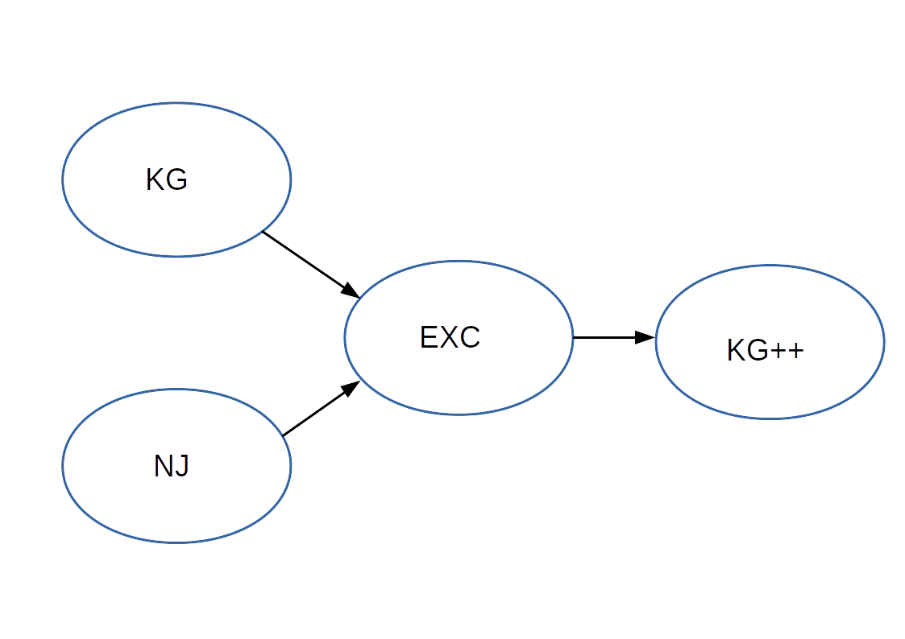
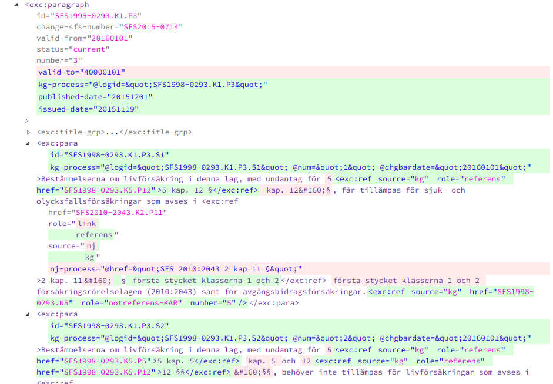

Merging The Swedish Code of Statutes (SFS)
XML Prague 2019
Ari Nordström | ari.nordstrom@gmail.com
Karnov Group Buys Norstedts juridik
Merging companies
- systems
- information
The Swedish Code of Statutes (Swedish: Svensk författningssamling; SFS) is the official law code of Sweden which contains the statutes and ordinances enacted and designated by the Government, including a publication of all new Swedish laws enacted by the Riksdag.
The Swedish Code of Statutes (SFS)
Annotated and published by both companies
SFS 1962:700
§ 1... |
KG Annotation NJ Annotation |
§ 2... |
KG Annotation NJ Annotation |
§ 3... |
KG Annotation NJ Annotation |
Common Online Platform

Printed Law Book
What You Need to Understand First
Approach
Norstedts DTD
Karnov DTD
Exchange DTD
KG++ DTD
KG to EXC
NJ to EXC
Diffing
Delta XML's XML Compare
SFS Merge pipeline
EXC to KG++
NJ Legacy publishing
The Printed Law Book
Tools
I'm a (Data) Pipelines Fan
Nic Gibson's XProc Tools
<xsl:template match="/">
<xsl:apply-templates select="node()" mode="SFS-EXC2KG_INLINE"/>
</xsl:template>
<xsl:template match="exc:ref" mode="SFS-EXC2KG_INLINE">
<kgp:ref>
<xsl:copy-of select="@* except @type"/>
<xsl:if test="@type">
<xsl:attribute name="target-type" select="@type"/>
</xsl:if>
<xsl:apply-templates select="node()" mode="SFS-EXC2KG_INLINE"/>
</kgp:ref>
</xsl:template>
<!-- ID transform -->
<xsl:template match="node()" mode="SFS-EXC2KG_INLINE">
<xsl:copy copy-namespaces="no">
<xsl:copy-of select="@*"/>
<xsl:apply-templates select="node()" mode="SFS-EXC2KG_INLINE"/>
</xsl:copy>
</xsl:template>
XSLT Pipeline Manifest
<manifest
xmlns="http://www.corbas.co.uk/ns/transforms/data"
xml:base="."
description="This converts Exchange XML to KG++ format">
<group description="Unmatched also need to be grouped">
<item
href="../sfsmerge/SFS-EXC-MERGE_group.xsl"
description="Group unmatched; merged will not be touched"/>
<item
href="../sfsmerge/SFS-EXC-MERGE_no-level-group.xsl"
description="Group group dividers without @level and their following siblings (non-recursive)"/>
</group>
<group
description="KG-specific steps"
xml:base=".">
<!-- Converts main structures -->
<item
href="SFS-EXC2KG_structure.xsl"
description="Converts main EXC structures"/>
<!-- Chapter versions to meta -->
<item
href="SFS-EXC2KG_version2meta.xsl"
description="Converts EXC chapter version information to KG++ meta items"/>
<!-- Group title versions if there are two or more consecutive title groups -->
<item
href="SFS-EXC2KG_merge-title-versions.xsl"
description="Merges the versions of two or more consecutive title groups"/>
<!-- Front matter -->
<item
href="SFS-EXC2KG_front.xsl"
description="Converts front matter elements, except those that only need a namespace conversion"/>
<!-- In-force info -->
<item
href="SFS-EXC2KG_in-force.xsl"
description="Converts in-force elements"/>
<!-- Various body- and chapter-level elements -->
<item
href="SFS-EXC2KG_body.xsl"
description="Converts various body- and chapter-level elements"/>
<!-- Para- and subpara-level elements -->
<item
href="SFS-EXC2KG_paras.xsl"
description="Converts para- and subpara-level elements"/>
<!-- Title elements -->
<item
href="SFS-EXC2KG_title-grp.xsl"
description="Converts title elements"/>
<!-- Block-level -->
<item
href="SFS-EXC2KG_block-level.xsl"
description="Converts block-level elements"/>
<!-- Annotations -->
<item
href="SFS-EXC2KG_annotations.xsl"
description="Converts annotations (both redanm and kommentar)"/>
<!-- Inline elements -->
<item
href="SFS-EXC2KG_inline.xsl"
description="Converts inline elements"/>
<!-- EXC namespace to KG++ namespace -->
<item
href="SFS-EXC2KG_namespace-conversion.xsl"
description="Converts the EXC namespace to the KG++ namespace"/>
<!-- Convert various IDs to LOGIDs -->
<item
href="SFS-EXC2KG_id-logid.xsl"
description="Converts IDs to LOGIDs"/>
<!-- Attrs -->
<item
href="SFS-EXC2KG_attrs.xsl"
description="Converts various attributes"/>
</group>
</manifest>
Debug
8.2M Jan 18 11:34 0-SFS1962-0700.xml
8.2M Jan 18 11:34 1-SFS-EXC-MERGE_group.xsl.xml
8.2M Jan 18 11:34 2-SFS-EXC-MERGE_no-level-group.xsl.xml
8.2M Jan 22 09:17 3-SFS-EXC2KG_structure.xsl.xml
8.3M Jan 22 09:17 4-SFS-EXC2KG_version2meta.xsl.xml
8.2M Jan 22 09:17 5-SFS-EXC2KG_merge-title-versions.xsl.xml
8.3M Jan 22 09:17 6-SFS-EXC2KG_front.xsl.xml
8.2M Jan 22 09:17 7-SFS-EXC2KG_in-force.xsl.xml
8.3M Jan 22 09:17 8-SFS-EXC2KG_body.xsl.xml
8.3M Jan 22 09:17 9-SFS-EXC2KG_paras.xsl.xml
8.6M Jan 22 09:17 10-SFS-EXC2KG_title-grp.xsl.xml
8.8M Jan 22 09:17 11-SFS-EXC2KG_block-level.xsl.xml
8.3M Jan 22 09:17 12-SFS-EXC2KG_annotations.xsl.xml
9.8M Jan 22 09:17 13-SFS-EXC2KG_inline.xsl.xml
8.1M Jan 22 09:17 14-SFS-EXC2KG_namespace-conversion.xsl.xml
8.1M Jan 22 09:17 15-SFS-EXC2KG_id-logid.xsl.xml
7.9M Jan 22 09:17 16-SFS-EXC2KG_attrs.xsl.xml
XML Compare
DeltaXML
<exc:para deltaxml:deltaV2="A!=B">
<deltaxml:attributes deltaxml:deltaV2="B">
<dxa:kg-process
deltaxml:deltaV2="B">
<deltaxml:attributeValue deltaxml:deltaV2="B"
>@logid="SFS2004-0046.K3.P3.S1" @num="1"
@chgbardate="20161101"</deltaxml:attributeValue>
</dxa:kg-process>
<dxa:id
deltaxml:deltaV2="B">
<deltaxml:attributeValue deltaxml:deltaV2="B"
>SFS2004-0046.K3.P3.S1</deltaxml:attributeValue>
</dxa:id>
</deltaxml:attributes>Fondbolaget
och förvaringsinstitutet ska ingå ett skriftligt avtal som reglerar förhållandet mellan
parterna. Avtalet ska bland annat reglera det informationsutbyte och den samordning som krävs
för att institutet ska kunna utföra sina uppgifter för fondens räkning i enlighet med kraven i
denna lag och andra författningar.
<deltaxml:textGroup deltaxml:deltaV2="A">
<deltaxml:text
deltaxml:deltaV2="A"> </deltaxml:text>
</deltaxml:textGroup>
<exc:ref deltaxml:deltaV2="B"
source="kg" href="SFS2004-0046.N94" role="notreferens-KAR" number="94"/>
<exc:change-sfs-grp deltaxml:deltaV2="A" source="nj" role="2016:892">
<exc:change-sfs publish-type="online">
<exc:para>Lag (2016:892).</exc:para>
</exc:change-sfs>
<exc:change-sfs publish-type="print">
<exc:para><exc:emph type="bold">Lag 2016:892</exc:emph> (se vid 4:15).</exc:para>
</exc:change-sfs>
</exc:change-sfs-grp>
</exc:para>
(Limited) Information Analysis
NJ Sources
KG sources
Rinse & Repeat
(Lots of) eXist Queries
xquery version "3.1";
let $base := '/db/sfs/nj'
let $moment := {
for $doc in collection($base)//sfs[.//sfskapitel//moment]
return $doc
}
return {
$moment/node()
}
Properly Diffing for the First Time
Conclusions
- It's doable!
- Manual selections necessary
- Most problems cultural rather than technical